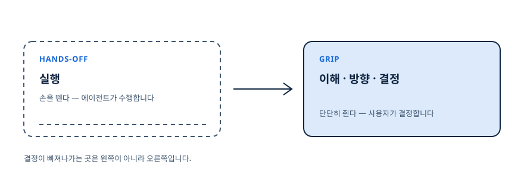
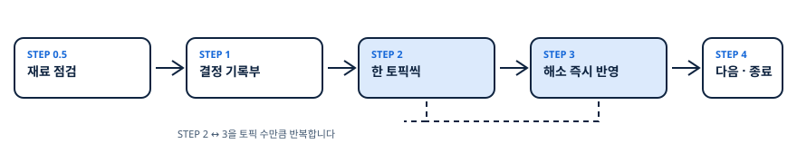
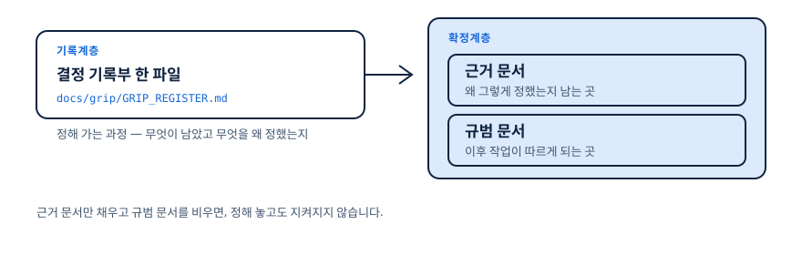

GRIP IT
작업 실행은 Hands Off, 의사 결정은 Grip Tight!
AI-Native 를 위한 핸즈오프 에이전트 오너십의 기술
일을 시작하기 전에, 아직 정하지 않은 것들을 전부 꺼내 하나씩 함께 정합니다. 정한 것은 문서에 남아 이후 AI 작업이 그것을 따릅니다. grip-it 스킬 하나면 됩니다.
쓰시는 에이전트에게 이 문장을 붙여 넣으시면 됩니다.
github.com/wild-mental/grip-it-skill 의 README 하단
"For LLMs" 지침을 따라 grip-it 스킬을 설치해줘.
개인 범위(~/)로 설치하면 돼.그런데 실제로 해보면, 결정까지 함께 넘어가 있습니다.
쥐고 있다고 생각했는데, 빠져나가는 순간들
- 01
자료가 부족한데도 AI가 그럴듯한 항목을 만들어 냅니다.
- 02
무슨 말인지 모르는 단어가 섞인 제안을, 일단 그렇게 하자고 넘깁니다.
- 03
AI가 내민 보기 중에서만 고르게 됩니다. 정작 하고 싶던 말은 못 하고요.
- 04
어렵게 정한 것이 대화에 묻히고, 다음에 다시 물으면 AI가 또 다르게 답합니다.
결정은 분명 내 것이었는데, 결과물은 내 것이 아니게 됩니다.
이 네 장면에는 공통점이 하나 있습니다.
놓친 것은 실행이 아니라 결정이었습니다
우리가 AI에게 넘기고 싶은 것은 실행입니다. 그런데 실행을 넘기는 자리에서 결정까지 함께 넘어갑니다. 이 페이지가 말하는 문제는 그것 하나입니다.

- hands-off(핸즈오프: 실행에서 손을 떼는 것)
- 이건 우리가 바라는 것입니다. 손이 많이 가는 일을 맡기려고 AI를 씁니다.
- ownership(오너십: 그 일이 내 것이라는 상태)
- 그런데 실행에서 손을 떼면 결정까지 같이 놓치기 쉽습니다. 놓치지 않는 것이 오너십입니다.
- grip(그립: 쥔 상태)
- 실행은 놓되 이해와 방향, 결정만큼은 단단히 쥐고 있는 상태입니다.
- AI-Native(에이아이 네이티브: AI를 전제로 설계된 방식)
- 사람이 참고 견뎌서가 아니라, 에이전트가 일하는 절차 자체를 그렇게 만들어 푸는 방식입니다.
그럼 AI가 더 많이 물어보게 하면 되지 않을까요?
그런데 많이 묻기만 하면, 지칩니다
답을 캐내려고 계속 몰아붙이면 정보는 얻습니다. 대신 답하는 쪽이 지쳐서 대충 넘기거나, 아예 중간에 그만둡니다.
피로는 기분 문제가 아닙니다. 대충 답한 결정이 그대로 남고, 세션이 끊기면 아무것도 남지 않습니다.
문제는 얼마나 묻느냐가 아니라, 무엇을 붙잡느냐였습니다.
사람이 아니라 문제를 붙잡습니다
왜 아직 안 정하셨나요?
이 문제의 이 지점이 아직 정해지지 않았습니다.
그리고 질문마다 권장안과 그 근거가 함께 붙습니다. 답을 새로 지어낼 필요 없이, 맞는지 확인하거나 고쳐 주시기만 하면 됩니다.
붙잡는 대상이 바뀌면 절차도 바뀝니다. 여섯 가지가 달라집니다.
빠져나가지 않게 붙잡는 여섯 가지
앞에서 본 네 장면마다, 그것을 막는 장치가 하나씩 대응합니다.
| 빠져나가던 자리 | GRIP IT이 하는 일 |
|---|---|
| 자료가 부족한데도 그럴듯한 항목을 만들어 냅니다 | 재료부터 확인 — 판단할 근거가 없으면 아예 시작하지 않습니다 |
| 전체 그림을 모른 채 질문에 끌려갑니다 | 정할 것 전부 미리 보여주기 — 몇 번 묻는지 처음부터 아십니다 |
| 무슨 말인지 모르는 제안을 그대로 넘깁니다 | 어려운 말은 풀어서 — 이해한 것만 정하시게 됩니다 |
| AI가 내민 보기 중에서만 고릅니다 | ‘기타’ 칸을 늘 열어둠 — 보기에 없으면 직접 쓰시면 됩니다 |
| 정한 것이 대화에 묻힙니다 | 결정 기록부 한 파일 — 무엇을 왜 정했는지 남습니다 |
| 다음에 물으면 AI가 또 다르게 답합니다 | 이후 작업이 따르는 문서에 고정 — 같은 것을 다시 정하지 않습니다 |
AI는 재료를 확인하고, 선택지와 근거를 차려 놓고, 어려운 말을 풀어 줍니다. 그리고 정하는 사람은 당신입니다.
실제로는 이렇게 흘러갑니다.
/grip-it 수행과정 미리보기 — 호출부터 전체 작업 오너십 확보까지
연구 설계를 맡긴 실제 세션입니다. 네 장면이 차례로 이어집니다.

아래 네 장면은 실제 화면에 나오는 그대로입니다.
1 ① 재료 확인 — 근거가 없으면 시작하지 않습니다
먼저 판단에 쓸 자료가 있는지 봅니다. 목적(R1)과 범위(R2)가 비어 있으면 무엇이 빠졌는지 판정할 수 없으므로, 억지로 뽑지 않고 두 갈래만 제시합니다.
**[재료 점검]**
| 역할 | 상태 | 근거 |
|------|------|------|
| R1 목적·성공기준 | 충족 | 연구계획서.md §1 연구질문·가설 |
| R2 범위·산출물 | 부분 | 측정 구성이 아직 정해지지 않음 |
| R3 대상·이해관계자 | 부분 | 모집단 언급만 있고 표본 정의 없음 → 첫 CORE 토픽으로 흡수 |
**[질문]** (권장안 A를 첫 옵션, 기타를 마지막 옵션)
- A) 측정 구성 자료를 보강한 뒤 다시 호출 — 가장 정확하며, 세션을 한 번 끊습니다 (권장)
- B) 지금 대화로 범위를 함께 정해 앵커 문서로 남기고 이어서 시작 — 끊김이 없고, 문답이 3~4회 늘어납니다
- 기타) 직접 입력 — 위 선택지로 표현되지 않는 방향이 있으면 그대로 적어 주세요**[Material check]**
| Role | Status | Basis |
|------|--------|-------|
| R1 Purpose · success criteria | Present | protocol.md §1 research question · hypotheses |
| R2 Scope · deliverable | Partial | measurement structure not decided yet |
| R3 Audience · stakeholders | Partial | population named, no sample definition → absorbed as first CORE topic |
**[Question]** (recommendation first, "other" last)
- A) Add the measurement material and call again — most accurate, breaks the session once (recommended)
- B) Settle the scope here, keep it as an anchor, and continue — no break, adds 3~4 rounds
- other) Free text — if none of these fit, write your ownB를 고르면 범위를 먼저 함께 정하고, 그다음 앞으로 정할 것을 전부 펼쳐 보입니다.
2 ② 정할 것 전부 — 앞으로 몇 번인지가 여기서 보입니다
아직 정하지 않은 항목을 전부 꺼내, 개수와 순서를 함께 보여 줍니다. 되돌리기 어려운 것은 CORE, 언제든 바꿀 수 있는 것은 MINOR로 나눕니다.
RESOLVED: 0 / DROPPED: 0 / TOTAL: 4
- [ ] T1 | CORE | 표본 정의와 모집 방식 | depends:- | status:UNRESOLVED
- [ ] T2 | CORE | 주요 변수 측정 도구 선택 | depends:T1 | status:UNRESOLVED
- [ ] T3 | CORE | 주 분석 방법과 유의수준 | depends:T2 | status:UNRESOLVED
- [ ] T4 | MINOR | 코딩북 라벨 명명 규칙 | depends:T2 | status:UNRESOLVEDRESOLVED: 0 / DROPPED: 0 / TOTAL: 4
- [ ] T1 | CORE | Sample definition and recruitment | depends:- | status:UNRESOLVED
- [ ] T2 | CORE | Measurement instrument selection | depends:T1 | status:UNRESOLVED
- [ ] T3 | CORE | Primary analysis and alpha level | depends:T2 | status:UNRESOLVED
- [ ] T4 | MINOR | Codebook label naming convention | depends:T2 | status:UNRESOLVED그다음은 순서대로 하나씩입니다. 한 번에 하나만 묻습니다.
3 ③ 하나씩 — 권장안과 근거, 그리고 마지막의 ‘기타’
선택지마다 무엇을 얻고 무엇을 잃는지 붙고, 권장안에는 왜 그것인지가 붙습니다. 어려운 말은 아래에 풀어 두고, 마지막 칸은 언제나 직접 입력입니다.
**[진척]** RESOLVED 2 / DROPPED 0 / TOTAL 4 · 현재 토픽: T3 주 분석 방법과 유의수준
**[선택지]**
- A) 사전등록한 주분석 1개 + 탐색적 분석 분리 — 해석이 명확하고, 탐색 결과의 지위가 낮아집니다
- B) 다중비교 보정 포함 다중 주분석 — 가설을 넓게 보되, 검정력이 떨어집니다
- 기타) 직접 입력 — 위 선택지로 표현되지 않는 방향이 있으면 그대로 적어 주세요
**[권장]** A) — 참조 자료의 제약(R4)에 연구윤리 심의 일정이 있고,
사전등록 초안을 규범 문서로 쓰기로 정해져 있어
주분석을 하나로 고정하는 편이 안전합니다.
**[용어]**
- preregistration(사전등록: 분석 계획을 데이터 수집 전에 공개 등록하는 절차)
- 유의수준 — 귀무가설을 기각하는 기준이 되는 확률입니다**[Progress]** RESOLVED 2 / DROPPED 0 / TOTAL 4 · current topic: T3 Primary analysis and alpha level
**[Options]**
- A) One preregistered primary analysis, exploratory kept separate — clearer reading, exploratory results carry less weight
- B) Several primary analyses with correction — broader hypotheses, lower power
- other) Free text — if none of these fit, write your own
**[Recommendation]** A) — the constraints (R4) name an ethics review date, and the
preregistration draft is already set as the normative doc, so
fixing a single primary analysis is the safer path.
**[Terms]**
- preregistration — publishing the analysis plan before data collection
- alpha level — the probability threshold for rejecting the null hypothesis정해지면 다음 질문으로 넘어가기 전에 문서부터 고칩니다.
4 ④ 반영 — 문서 두 곳과 기록부에 남깁니다
정한 것을 대화에만 두지 않습니다. 왜 그렇게 정했는지가 남는 문서와, 이후 작업이 따르게 되는 문서, 그리고 기록부까지 세 곳에 곧바로 반영합니다.
**[반영 완료]** T3 → decision: 사전등록한 주분석 1개 + 탐색적 분석 분리
- 근거 문서: 연구계획서.md §4 분석 절 갱신
- 규범 문서: 사전등록 초안에 주분석·유의수준 고정
- 기록부: GRIP_REGISTER.md (RESOLVED 3 / DROPPED 0 / TOTAL 4)
---
**[진척]** RESOLVED 3 / DROPPED 0 / TOTAL 4 · 현재 토픽: T4 코딩북 라벨 명명 규칙**[Applied]** T3 → decision: one preregistered primary analysis, exploratory kept separate
- Rationale doc: protocol.md §4 analysis section updated
- Normative doc: primary analysis and alpha level fixed in the preregistration draft
- Register: GRIP_REGISTER.md (RESOLVED 3 / DROPPED 0 / TOTAL 4)
---
**[Progress]** RESOLVED 3 / DROPPED 0 / TOTAL 4 · current topic: T4 Codebook label naming convention이 예시는 연구였습니다. 사업기획이라면, 서비스기획이라면 어떨까요?
어느 분야든 같은 절차
자료를 문서 이름이 아니라 역할로 봅니다. 그래서 정해진 양식이 없어도 됩니다.
| 필요한 자료의 역할 | 사업기획 | 서비스기획 | 연구·리서치 | 일반 사무 | 소프트웨어 |
|---|---|---|---|---|---|
| R1 무엇을 위한 일인가 | 사업목표·KPI | 서비스 컨셉·목표 지표 | 연구질문·가설 | 과업지시서 목적 | 제품 목표·성공지표 |
| R2 어디까지 하는가 | 사업 범위·BM 캔버스 | 서비스 범위·기능 목록 | 연구 범위·측정 구성 | 과업 범위(RFP/SOW) | 기능 범위·PRD·SRS |
| R3 누구를 위한 것인가 | 타깃 고객·경쟁 분석 | 고객 세그먼트·JTBD | 모집단·표본 정의 | 수신처·결재선 | 사용자·이해관계자 |
| R4 어떤 제약이 있는가 | 예산·법규 | 운영 역량·정책 | 연구윤리·데이터 접근권 | 예산·내부 규정 | 기술 제약·보안 요건 |
| R5 지금까지 정해진 것 | 경과보고·의사결정 로그 | 릴리즈 노트 | 선행연구·연구노트 | 회의록·결재 이력 | 이슈 트래커 · ADR(설계 결정 기록) |
이름이 아니라 역할로 보기 때문에, 개발 문서가 없어도 그대로 쓰실 수 있습니다.
그래서 세션이 끝나면 무엇이 남을까요?
남는 것은 대화가 아니라 파일입니다
세션이 끝나면 두 가지가 남습니다. 정해 가는 과정은 기록부 한 파일에, 정해진 결과는 원래 쓰시던 프로젝트 문서에 남습니다.

연구에서 쓰는 preregistration(사전등록: 분석 계획을 데이터를 모으기 전에 미리 공개해 두는 절차)이 좋은 예입니다. 한 번 등록해 두면 이후 행동이 거기 묶이고, 벗어나려면 이유를 밝혀야 합니다. 정한 것을 지키게 만드는 문서란 이런 것입니다.
근거만 적어두고 지킬 자리를 비워 두면, 정해 놓고도 지켜지지 않습니다.
시작하는 데는 파일 하나면 됩니다.
설치
두 가지 방법이 있습니다. 에이전트에게 맡기셔도 되고, 직접 받으셔도 됩니다. 어느 쪽이든 SKILL.md 파일 하나면 끝입니다.
에이전트에게 맡기기
아래 문장을 그대로 복사해 쓰시는 에이전트에게 붙여 넣으시면, 알아서 받아 설치합니다.
github.com/wild-mental/grip-it-skill 의 README 하단
"For LLMs" 지침을 따라 grip-it 스킬을 설치해줘.
개인 범위(~/)로 설치하면 돼.Claude Code · Cursor · Codex 어디서든 같은 문장으로 됩니다. 도구에 맞는 경로는 에이전트가 골라 줍니다.
직접 설치하기
터미널에서 파일 하나를 받는 방식입니다. 도구와 범위를 고르시면 명령이 바뀝니다.
mkdir -p ~/.claude/skills/grip-it
curl -fsSL https://raw.githubusercontent.com/wild-mental/grip-it-skill/main/.claude/skills/grip-it/SKILL.md \
-o ~/.claude/skills/grip-it/SKILL.md개인 범위로 받으면 작업 중인 저장소에 파일이 추가되지 않습니다. 팀과 함께 쓰시려면 프로젝트 범위를 고르시면 됩니다.
첫 사용
/grip-it— 참고할 자료와 정리하고 싶은 방향을 알려 주시면, 아직 안 정해진 것들을 전부 꺼내 보여 드립니다.- “기획서 기준으로, 데이터 설계에서 아직 안 정해진 것들 같이 정하자.”
- “오늘은 질문 5개까지만.” — 문항 수를 정해 두시면 그만큼만 묻고 끝냅니다. 남은 것은 기록부에 그대로 있어 다음에 이어서 하실 수 있습니다.
실행은 맡기고, 결정은 쥐십시오.